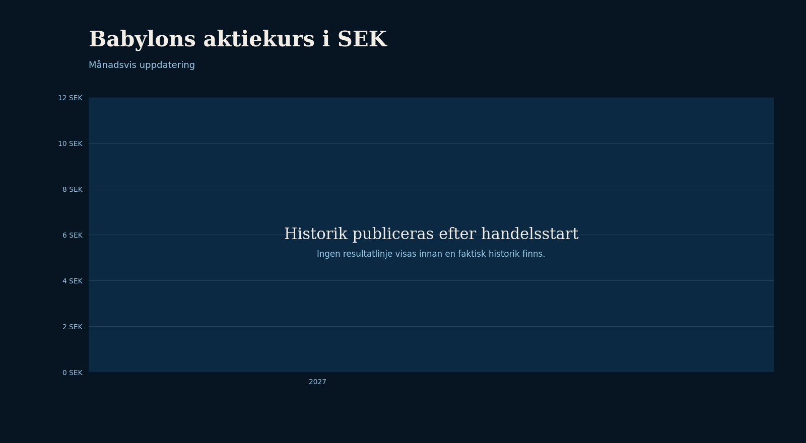
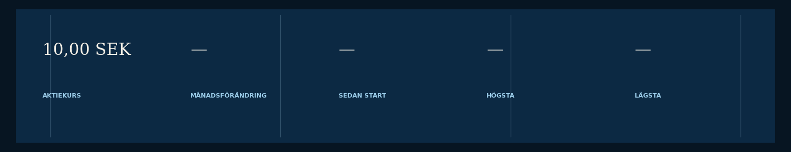
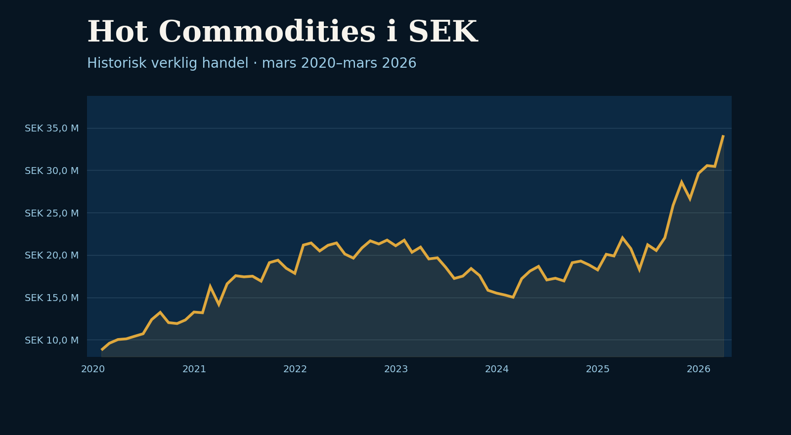
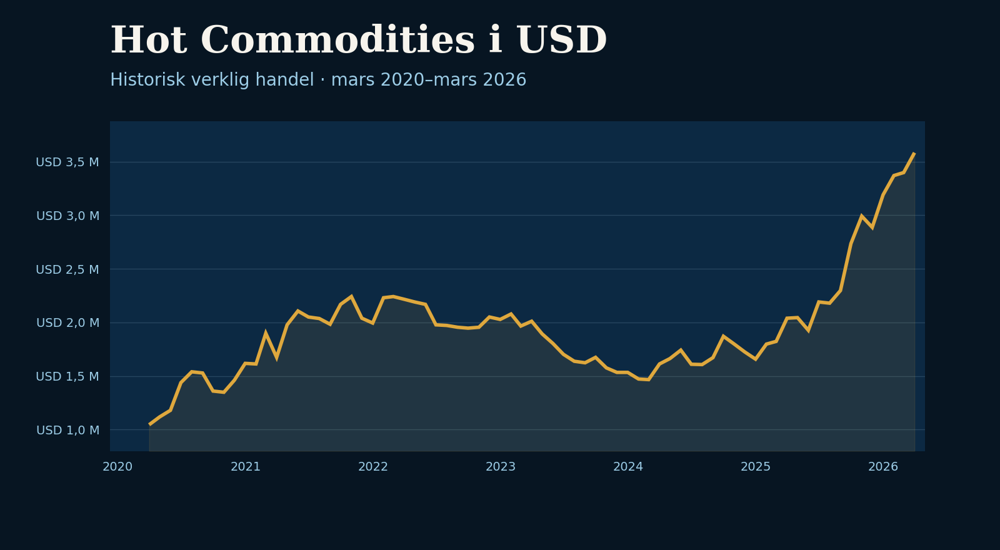
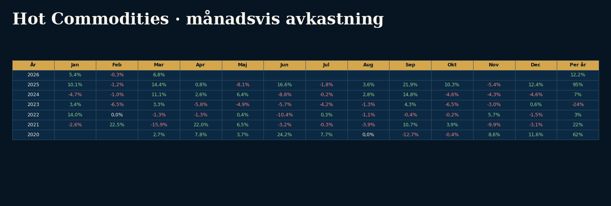
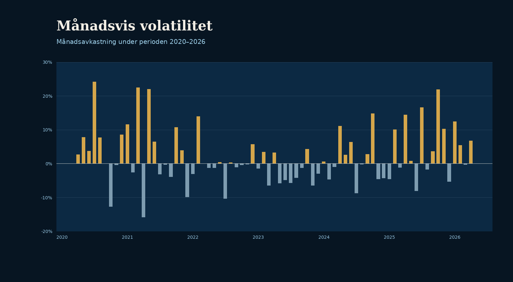

Precio de la acción
El precio de la acción se ha calculado a partir del valor neto de los activos de Babylon Capital AB conforme a la base de cálculo establecida por la sociedad.
El precio de la acción muestra la evolución del valor de Babylon Capital AB.
Precio de la acción
Precio de la acción de Babylon en SEK
Información principal

Precio de la acción de Babylon en USD
Información complementariaLa historia detrás de la gestión.
La experiencia de la operativa real en Hot Commodities ha contribuido a nuestro enfoque de gestión sistemática.
El programa opera con capital real desde 2020 y sigue sistemáticamente los movimientos de precios en una amplia selección de mercados mundiales de materias primas. La experiencia del programa ha orientado el trabajo sobre el tamaño de las posiciones, el control del riesgo y la forma en que un modelo de seguimiento de tendencias gestiona distintos entornos de mercado.
Los resultados que figuran a continuación corresponden a la operativa real de Hot Commodities, un programa de negociación anterior. La evolución propia de Babylon Capital se muestra en Precio de la acción.
Hot Commodities.
La serie histórica muestra cómo evolucionó el programa durante periodos de tendencias fuertes y condiciones de mercado más débiles.
Los gráficos muestran el historial presentado en SEK y USD, respectivamente.



La volatilidad forma parte del seguimiento de tendencias.
Pueden producirse meses negativos superiores al 10 por ciento cuando se devuelven beneficios no realizados previamente al consolidarse el mercado o cambiar de dirección.
Es una parte natural de la negociación basada en tendencias y a menudo resulta necesario para mantener posiciones durante tendencias más largas y fuertes. En fases de tendencias intensas puede aumentar la volatilidad de las posiciones abiertas, generando mayores oscilaciones en la rentabilidad mensual antes de que finalice la tendencia.

Diversificación entre mercados.
Hot Commodities es un programa individual de materias primas.
El historial más amplio incluye GoldBug, Hot Commodities, Soft Commodities, Energizer, Agro, Krypto Knight, Satoshi y Vitalik. Hot Commodities y los programas anteriores son programas individuales de negociación que Henrik Hallenborg ha ofrecido como cuentas gestionadas. Algunos comenzaron ya en 2018.
La combinación aporta exposición a materias primas y criptoactivos mediante varios programas separados. Los periodos de caídas importantes forman parte natural de la negociación sistemática y de seguimiento de tendencias.
Una perspectiva más amplia de la gestión.
En el prólogo del libro Managed Futures – Sigue al rebaño desde la distancia, Henrik Hallenborg explica con más detalle sus antecedentes, su camino hacia la negociación sistemática y la experiencia que sustenta la gestión.
Leer el prólogo de Henrik en el libro →